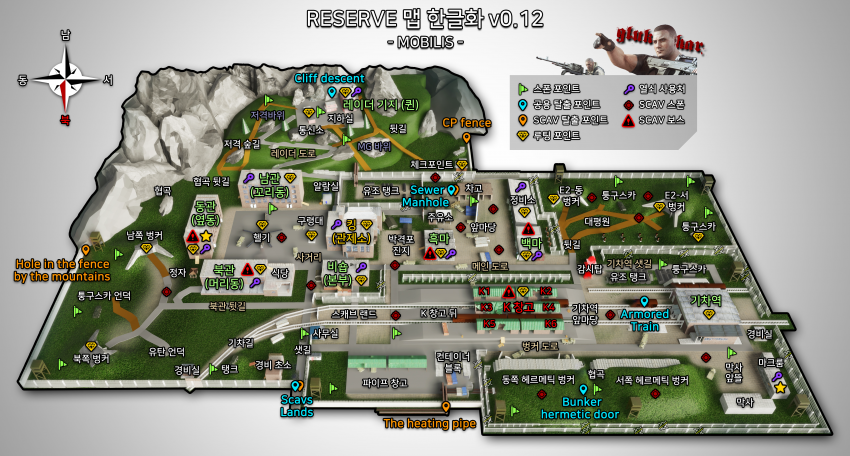

리저브
리저브 맵

The bunker - Part 2(벙커 파트 2)
퀘스트 목표
- 화이트 비숍 건물에서 지하 벙커로 진입하는 통로 찾기
- 블랙 비숍 건물에서 지하 벙커로 진입하는 통로 찾기
- 블랙 폰 건물에서 지하 벙커로 진입하는 통로 찾기
- 화이트 폰 건물에서 지하 벙커로 진입하는 통로 찾기
- 화이트 킹 건물에서 지하 벙커로 진입하는 통로 찾기
- 살아서 탈출하기
보상
- 6600 경험치
- Prapor(프라퍼) 평판 +0.08
- 25,000 루블
- Kalashnikov AKS-74UB 5.45x39 1정
- 5.45x39 mm BS 120발
지하 벙커로 진입할 수 있는 5개의 진입로를 한번에 전부 들른 뒤 탈출해야 한다. 진행중 한군데라도 들르지 않고 탈출하거나, 죽거나, 디스커넥트할 경우 다시 도전해야 한다. 리저브 지하 벙커에 자주 와보지 않은 유저에게는 가뜩이나 길도 복잡한데 죽지도 않아야 하니 까다로운 퀘스트. 리저브에 대해 잘 알고 있는 다른 유저와 동행하는 것이 좋으며, 혼자 진행한다면 유튜브나 오프라인 플레이를 통해 길을 미리 익혀두는 것이 좋다.